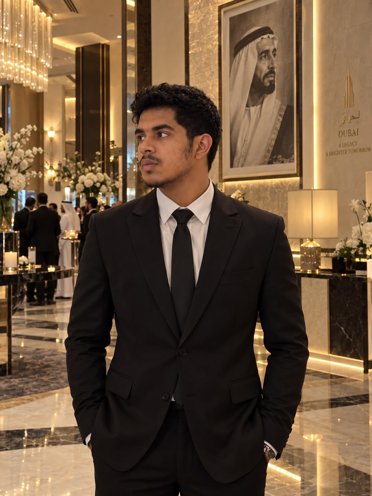
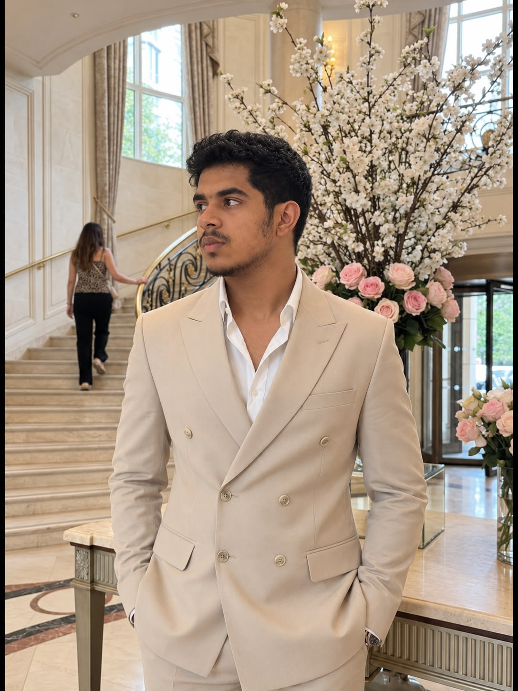
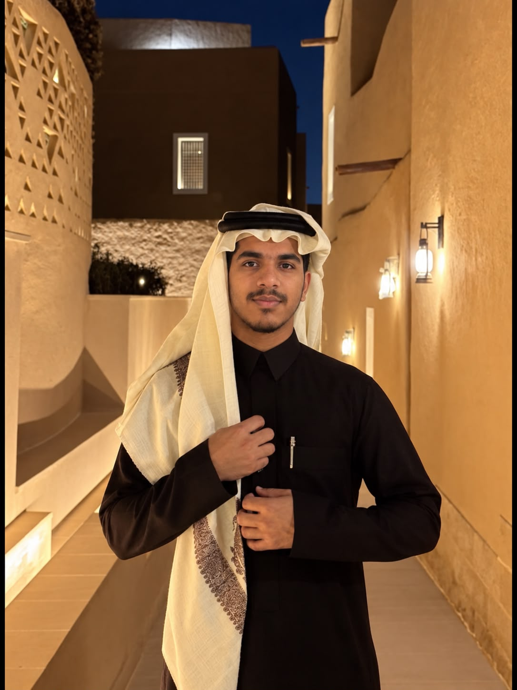

Artificial Intelligence
Exploring how intelligent software can support practical, everyday tasks.
Founder & Creator · Neo Local AI
AI Developer &
Technology Builder
Building and exploring practical AI systems with Python, local models and intelligent automation.
Explore my work
I’m Omar Imran, a 17-year-old AI developer and technology builder exploring how artificial intelligence can become more useful, capable and personal.
My work and learning focus on large language models, generative AI, AI agents, deep learning and automation. I’m interested in understanding how these technologies work and combining them into practical software through independent development and experimentation.
Python is my main programming language. I’m building on an intermediate foundation through hands-on projects, alongside professional learning and certification work from organizations including Google, Microsoft and AWS.
As the founder and creator of Neo Local AI, I’m exploring more personal ways to use intelligent software. One of my central projects is OMR.AI, an evolving AI platform bringing together ideas around models, tools, memory and human interaction.
Learning through development, from the underlying concepts to the experience of using them.
Exploring how intelligent software can support practical, everyday tasks.
Experimenting with language models, their capabilities and their limitations.
Exploring assistants that use tools and work through a sequence of tasks.
Building applications and experiments while strengthening my Python foundation.
Exploring tools and models that create text, images and other forms of content.
Developing an understanding of neural networks and the systems built around them.
Connecting models, APIs and tools to simplify repeated work.
Experimenting with models that run on personal devices and support local processing.
Personal AI System
In developmentExploring how the pieces of personal AI can work together.
OMR.AI is an evolving personal platform exploring conversational intelligence, AI tools and automation in one experience. Its development brings together experiments with local and cloud models, assistants, agentic workflows and privacy-oriented local processing.
Local and cloud model switching, voice interaction, web research and computer assistance.
Tool calling, plugin architecture, memory systems and personal AI workflows.
Experiments with image and video-generation integrations alongside conversational AI.
These are areas of ongoing exploration. Capabilities evolve as the project develops.
Technologies and concepts I use, study and experiment with.
Alongside independent development, I’ve completed professional learning and certification work from organizations including Google, Microsoft and AWS.
Professional learning
Professional learning
Professional learning
Areas of study
I learn by creating real systems and turning technical ideas into working experiments.
I look beneath the interface to understand how models, tools and software work together.
I test emerging models and architectures, paying attention to their strengths and limitations.
I use what each project teaches me to refine the next version and strengthen my technical foundation.
Each stage adds another layer of understanding, from programming fundamentals to connected AI systems.
Learning programming and Python fundamentals.
Studying artificial intelligence, LLMs, generative AI and deep learning.
Experimenting with APIs, models, assistants and automation.
Developing a personal AI platform and exploring how its capabilities can connect.
Deepening my Python engineering skills and building more capable agentic systems.


Drag or swipe to explore
A personal perspective
“I’m interested in understanding what becomes possible when models, tools, memory, automation and human interaction are designed as one system.”
Omar Imran Founder & Creator